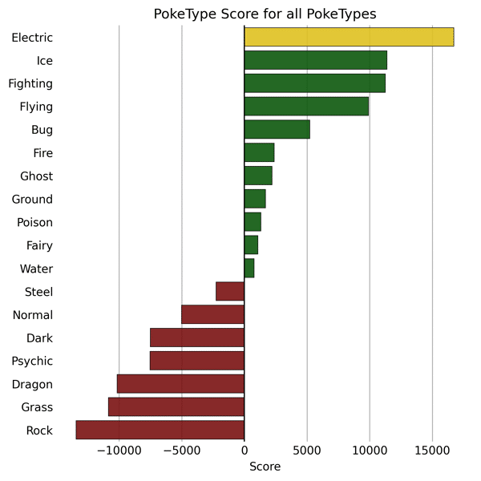
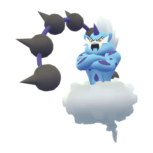
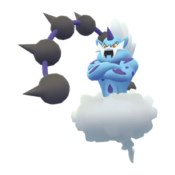

Which one is the best Pokemon of them all?
This question is quite obvious, because all the game is about is collecting better and better Pokemon to increase your battle strength, to eventually be so strong that you can defeat the bad guys who want to abuse Pokemon to gain power.
As I am a data scientist, this question is exciting, because it can be answered very precisely just from looking at all the available data.
So let us dive straight into it!
What is a good Pokemon?
A good Pokemon has many qualities. Among others, there are its Battle Points, divided into different skills. But what can really give a Pokemon a big advantage in a fight, even if it has less Battle Points than the opposing Pokemon is attacking effectively and being attacked ineffectively. Even with a very high attack score of Battle Points, an attacker deals only mediocre damage (0.5x) if it is ineffective against the attacked Pokemon's PokeType. Vice versa, if a Pokemon attacks effectively, even with a low attack score of Battle Points, it can deal a lot more damage (2x).So, one could say that better Pokemon are more likely to face PokeTypes in a fight that are ineffective against it and which it attacks effectively itself. To measure this "more likely", we give a definition of the PokeType likelihood:The likelihood of a Pokemon facing a Pokemon of PokeType $T$ is the sum of catch rates of all Pokemon of that PokeType . In a formula, this is:
$\textit{PokeType likelihood} = \sum_{p \in T} c_p,$ where $T$ is the set of Pokemon of PokeType $T$ and $p \in T$ signifies that $p$ is a Pokemon of said type. Further, $c_p := $ Catchrate of Pokemon $p$. We here assume that the probability of encountering a Pokemon is proportional to its catch rate. This assumption is intuitive as more rare Pokemon are usually have lower catch rates. The PokeType likelihood is thus a weighted sum over the set of all Pokemon of this PokeType. The weights being the catch rates.
We will conduct the following data analysis on a dataset of all Pokemon in the Pokeverse, from Generations 1 to 6.
What PokeTypes are good at what?
 We can clearly see that
Steel
is the PokeType with the most Opponents dealing less damage to it
due to Type mechanics. However,
Steel
Pokemon do not naturally counter a lot of pokemon.
Fire
,
Grass
and
Rock
are ranked quite high in both counters and weak attackers with
Fire
seeming to be
the best overall. But are they really the best PokeTypes?
We can clearly see that
Steel
is the PokeType with the most Opponents dealing less damage to it
due to Type mechanics. However,
Steel
Pokemon do not naturally counter a lot of pokemon.
Fire
,
Grass
and
Rock
are ranked quite high in both counters and weak attackers with
Fire
seeming to be
the best overall. But are they really the best PokeTypes?
Are Pokemon that deal more damage less resistant to others?
The idea behind this question is simple. Usually, in games, the characters that deal more damage are also more endangered by other characters. This leads to a balancing between different classes of characters, because classes that deal less damage can absorb a lot of damage and protect the damage dealers in the team.Does this hold true for PokeTypes aswell?
 This figure shows how a Pokemon's traits are when they counter a lot
of other Pokemon. It clearly shows that Pokemon that counter a lot
of other pokemon are also countered by a lot of other Pokemon. This
means in general that Pokemon that deal a lot of damage also take a
lot of damage and vice versa.
This figure shows how a Pokemon's traits are when they counter a lot
of other Pokemon. It clearly shows that Pokemon that counter a lot
of other pokemon are also countered by a lot of other Pokemon. This
means in general that Pokemon that deal a lot of damage also take a
lot of damage and vice versa.
However, there is no apparent relationship between Pokemon that counter a lot of other Pokemon and the amount of Pokemon that are ineffective against them (Color). So, even Pokemon that deal a lot of damage are not less likely to take reduced damage from other Pokemon.
What is the best PokeType?
Even though it is clear to see that PokeTypes that counter more Pokemon also get countered by more Pokemon, the balancing is probably not perfect. Achieving perfect balancing would be a complex optimization task for 600 different Pokemon. This is where we can gain an edge over opponents, by using the PokeType that counters more opponents than it is countered by. For measuring this, it is intuitive to use the metric:score = number of pokemon countered - pokemon Here is the ranking of all PokeTypes:  It becomes very evident that based on this simple metric of comparing how likely it is to encounter a Pokemon of a specific PokeType, Electric is the best PokeType by far! The worst ones are Rock , Dragon and Grass . Therefore, we will look more into the Electric class to determine the best Electric Pokemon. This will then be the best Pokemon of them all!
What is the best Electro Pokemon?
Within the best PokeType, Electro , there must be better and worse Pokemon. Luckily, it is relatively easy to measure how good a Pokemon is by looking at its total BattlePoints (BP). This is a sum of all of its characteristics points, like defense, attack and others. Therefore, the Pokemon with the most BP is the strongest one.Which one is it?
 We can see that Mega Ampharos has the highest score of battle
points. However, its second PokeType is not within the 4 best ones.
Therefore, one could argue that Zeraora is the best Pokemon because
it is pure
Electric
and as we saw above should thus be the most effective and strong
Pokemon of them all. It so happens that Mega Ampharos is actually a
second type
Dragon
Pokemon, which is the second worst category by earlier's metric.
Thus it is safe to say that for instance Zeraora is a better
Pokemon. However, some Pokemon with secondary PokeType
Flying
are also close to the best Pokemon in terms of Battle Points.
Naturally, the question arises wether it is beneficial to have
secondary PokeType
Flying
for Electric Pokemon...
We can see that Mega Ampharos has the highest score of battle
points. However, its second PokeType is not within the 4 best ones.
Therefore, one could argue that Zeraora is the best Pokemon because
it is pure
Electric
and as we saw above should thus be the most effective and strong
Pokemon of them all. It so happens that Mega Ampharos is actually a
second type
Dragon
Pokemon, which is the second worst category by earlier's metric.
Thus it is safe to say that for instance Zeraora is a better
Pokemon. However, some Pokemon with secondary PokeType
Flying
are also close to the best Pokemon in terms of Battle Points.
Naturally, the question arises wether it is beneficial to have
secondary PokeType
Flying
for Electric Pokemon...
Is it better to have PokeType Electro Flying or pure Electro?
If a Pokemon has second PokeType Flying , along with first PokeType Electro , it is exposed to more other effective Pokemon than pure Electro Pokemon. However, having Flying attack abilities can be very effective or at least effective on Pokemon, which Electro attacks are ineffective against. Moreover, Flying Pokemon are more resistant to other Pokemon than Electro , so being of second PokeType Flying might give a lot of benefits to Pokemon.So, does it?
 We can see that double PokeType
Electric
,
Flying
for Pokemon adds about double the amount of effectively attacked
Pokemon as compared to single PokeType
Electric
ones. On top of that, about 75% of ineffectively attacked Pokemon by
Electric
can be attacked normally or even effectively by
Flying
attacks. More, The amount of ineffectively attacking Pokemon
increases more than 2-fold when a Pokemon has second PokeType
Flying
.
We can see that double PokeType
Electric
,
Flying
for Pokemon adds about double the amount of effectively attacked
Pokemon as compared to single PokeType
Electric
ones. On top of that, about 75% of ineffectively attacked Pokemon by
Electric
can be attacked normally or even effectively by
Flying
attacks. More, The amount of ineffectively attacking Pokemon
increases more than 2-fold when a Pokemon has second PokeType
Flying
.
These metrics all show that having a PokeType combination of Electric & Flying is highly valuable.
On the other hand, the amount of pokemon effectively attacking such Pokemon is also drastically higher. It is thus a tradeoff of effective attacking and added resistance versus added danger from more potentially lethal Pokemon.
Overall, we would though conclude that having PokeTypes Electric & Flying is beneficial overall.
The best Pokemon of them all?
On par for the best Pokemon of them all, are ....| Name | Battle Points | |
|---|---|---|
| Zapdos | ||
| 580 | ||
| Thundrus Therian Form | ||
| 580 | ||
| Thundrus Incarnate Form | ||
| 580 |
 


Sanity Check
What if there were a Pokemon so strong that its Poketype does not matter? - This would invalidate all argumentation from above and simultaneously give us the best Pokemon as a direct answer: There is one Pokemon that really stands out. Eternatus Eternamax.
There is one Pokemon that really stands out. Eternatus Eternamax.
 Eternatus Eternamax is a Pokemon that appears in Pokemon Go as a
raid boss.
Eternatus Eternamax is a Pokemon that appears in Pokemon Go as a
raid boss.
It has more than double the BP of Zapdos and so is a better Pokemon,
even when facing Pokemon that counter it.
However, it is to be said that it cannot be caught.
Therefore, it would still be reasonable to say that the Electric Flying Pokemon mentioned above are the best Pokemon that can be part of a trainer's Team.
Louis von Leitner Dec 2025
Built in TeleportHQ